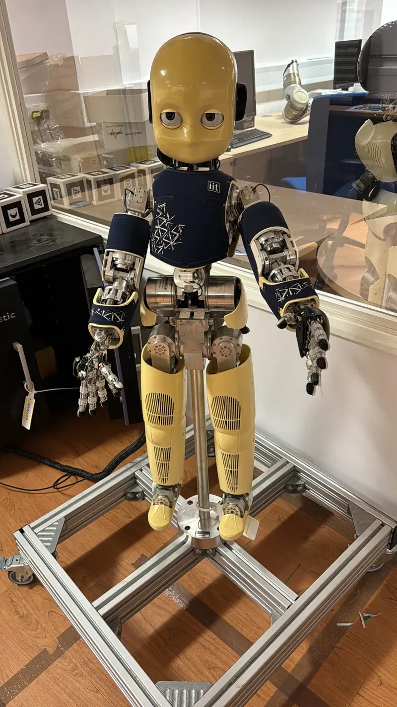

Say it, or show it
A companion robot has to be able to tell a person what it needs. This study asked whether pointing or speaking does that better, using a scenario chosen to be as mundane as the problem really is: the robot needs recharging. Speech won on clarity by a medium-to-large margin. On engagement the two were indistinguishable, which is the more interesting half of the result.
The question
Humanoid robots are being proposed for domestic, healthcare and educational settings, all of which require a robot to communicate a need to a person who is not an engineer. There are two obvious ways to do it, gesture and speech, and the literature has good work on each separately. Holthaus et al. give a systematic typology of communicative robot signals and state plainly that the effectiveness of gesture versus speech for building user trust is under-studied. That gap is what this study is aimed at.
Two questions, fixed before any data was collected. How well do non-verbal gestural cues convey robot intent compared with speech? And do the two modalities differ in the social attributes a person then attributes to the robot, measured as competence, warmth and discomfort on the Robotic Social Attributes Scale? The hypothesis was that speech would win on clarity and that the two would be comparable on warmth and engagement.
The platform


The study ran on the JD humanoid from EZ-Robot, at the University of Hertfordshire Robot House. Getting a scripted gestural sequence and a spoken alert to run reliably on the same platform, in front of a participant, on a schedule, is most of the work: I built a high-fidelity Isaac Sim digital twin to develop and rehearse the behaviours, engineered the hardware integration through ROS2, and deployed PyTorch-based non-verbal communication models onto the robot's real-time control loop.
The digital twin is not decoration. A gestural condition that has to be identical for twenty participants cannot be tuned live in front of them, and a pointing sequence that reads as intentional rather than mechanical takes many iterations to get right. Doing that in simulation and transferring it is what made the two conditions comparable.
The design
Within-subjects and counterbalanced: all twenty participants saw both conditions, with presentation order counterbalanced against order and learning effects. Twenty participants, ten female and ten male, mean age 23.4 (SD 3.2, range 18 to 35), recruited by opportunity sampling at Hertfordshire, with anyone holding professional robotics or HRI experience excluded and no financial incentive offered. Ethical approval was granted by the University of Hertfordshire Ethics Committee, reference cSPECS/CL/UH/05098, and every participant gave written informed consent.
Non-verbal condition. The robot performed a scripted referential pointing sequence, modelled on the object-directed pointing that dogs use to communicate need states without a shared language. No speech at all.
Verbal condition. The robot waved to establish joint attention, then spoke a single synthesised utterance: "I'm running low on battery. Could you please plug me into the charger?" No gestures beyond the opening wave.
After each condition, participants completed the Robotic Social Attributes Scale, eighteen items on a seven-point scale across three orthogonal factors, plus a single-item clarity rating and a forced-choice question recording what they believed the robot wanted. Sessions ran about twenty five minutes and closed with a semi-structured interview, transcribed and thematically analysed by two independent coders who reached a Cohen's kappa of 0.74 before consensus discussion.
The results
| Measure | Non-verbal | Verbal | t(19) | p |
|---|---|---|---|---|
| Clarity | 4.9 (SD 1.1) | 5.8 (SD 0.9) | 2.61 | 0.017 |
| Engagement | 4.7 (SD 1.0) | 5.2 (SD 0.8) | 1.60 | 0.120 |
| Intent identified | 80% (16/20) | 95% (19/20) | not applicable | not applicable |
Speech was clearer, at a medium-to-large effect size. The part worth dwelling on is how gesture failed. All three non-verbal misidentifications were failures of joint attention to the charger: participants understood that the robot wanted something and settled on the wrong object. That is referential ambiguity rather than communicative collapse, and it is exactly the failure mode Holthaus et al. predict when object salience is not established by context beforehand. Gesture is context-contingent in a way speech is not.
Engagement told the opposite story, and its null result is the more useful one. The difference did not reach significance, which suggests engagement is driven by broader features of the interaction scenario rather than by communicative modality. A robot that gestures is not less engaging for being less clear. On the RoSAS subscales both conditions produced positive competence and warmth profiles with low discomfort, so neither strategy read as threatening; warmth was marginally higher in the non-verbal condition, though not significantly so.
See it running
What people said
Trust through mimicry, in the non-verbal condition. Participants who rated the gestural phase highly described the movement as human-like and attributed thinking to a contemplative pause the robot made: "It was like it was thinking about how to tell me." That is trust grounded in perceived shared intentionality rather than in accurate information transfer, which is a different thing to be building on.
Clarity through speech, in the verbal condition. Directness was cited consistently: "It just told me what it needed, no guessing." The criticisms were of the synthesised voice rather than of the strategy, which suggests speech quality could moderate the advantage over a relationship longer than twenty five minutes.
Complementarity, unprompted, across both. Several participants proposed combining the two without being asked: "If it pointed and then said what it wanted, that would be perfect." A design recommendation that participants reach on their own, before anybody suggests it to them, is worth more than the same recommendation derived from the means.
What this does not show
Twenty participants is a pilot. It is consistent with prototyping norms in HRI and it is not enough for definitive inference: detecting an effect of d = 0.58 at alpha = 0.05, two-tailed, with 80% power would need about 55. Everything here is reported as exploratory for that reason, and the effect sizes are given precisely so that a replication can be powered properly.
One laboratory, one robot, one need state. A low-battery request is a narrow slice of what a companion robot has to communicate, and a scripted pointing sequence is a narrow slice of what gesture can do. The interview themes are hypothesis-generating rather than confirmatory, from twenty conversations coded by two people. Nothing here speaks to how any of it holds up over weeks rather than minutes, which is the timescale companionship actually lives on.
The study was run during the MSc (2023-2024). The PDF is its article-format write-up, completed in 2025. The manuscript is under review at Robotics (MDPI) and is not yet published.